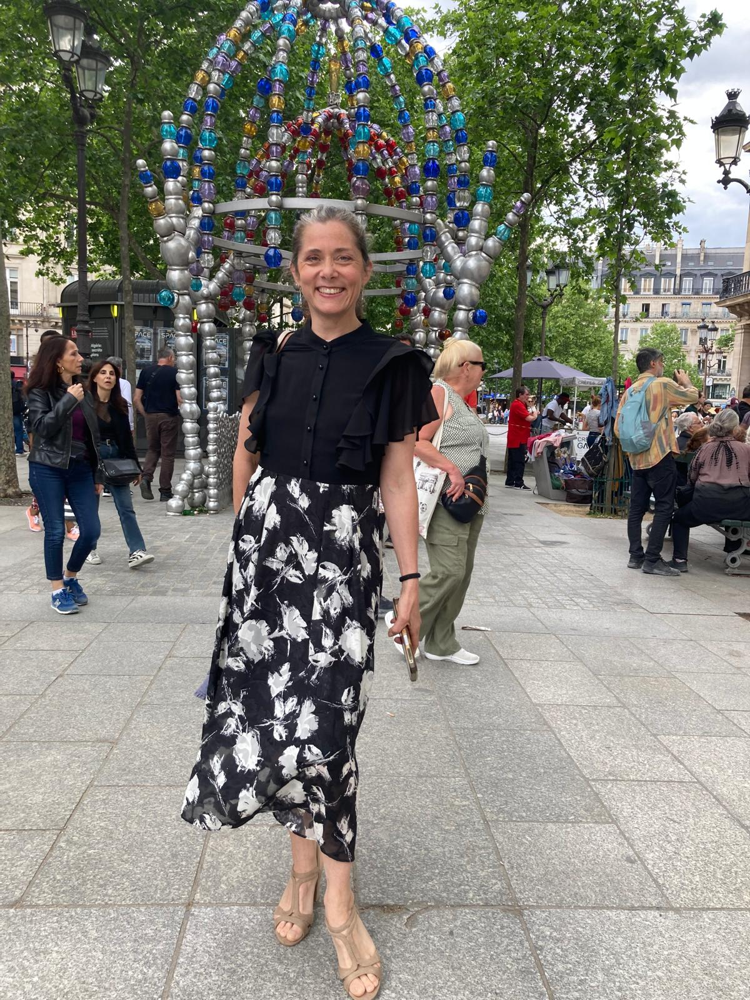
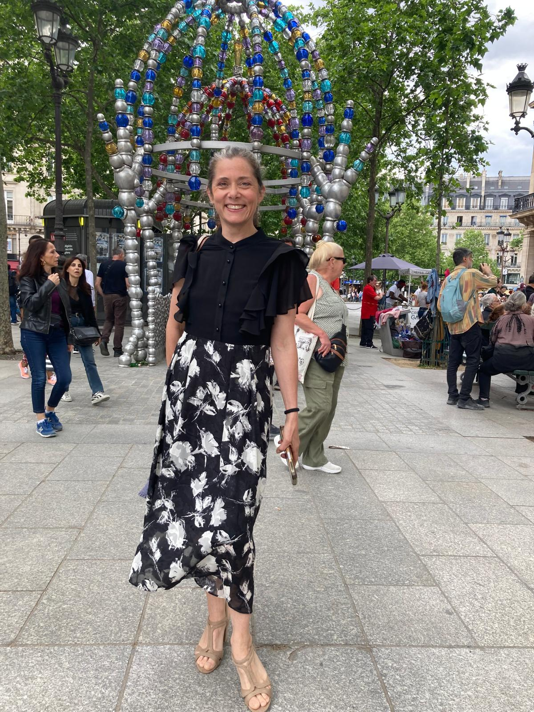

Actrice

Géraldine Hilaire est issue du Conservatoire de danse de Paris. Elle se forme à la tragédie et à la comédie et joue pour le théâtre, le cinéma et la télévision.
Géraldine Hilaire est issue du Conservatoire de danse de Paris. Elle se forme à la tragédie et à la comédie et joue pour le théâtre, le cinéma et la télévision.
 


Elle joue Molière, crée des spectacles mêlant danse et poésie et développe une écriture scénique personnelle.

Elle danse pour Angelin Preljocaj, l’American Ballet et développe un langage chorégraphique personnel.

Elle crée des spectacles théâtralisés autour des mythes, des légendes et de la poésie.
Géraldine Hilaire transmet le théâtre, la danse et le chant à travers des ateliers pédagogiques et artistiques.